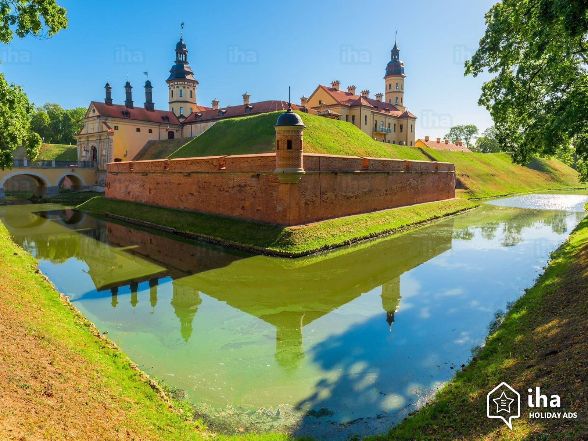
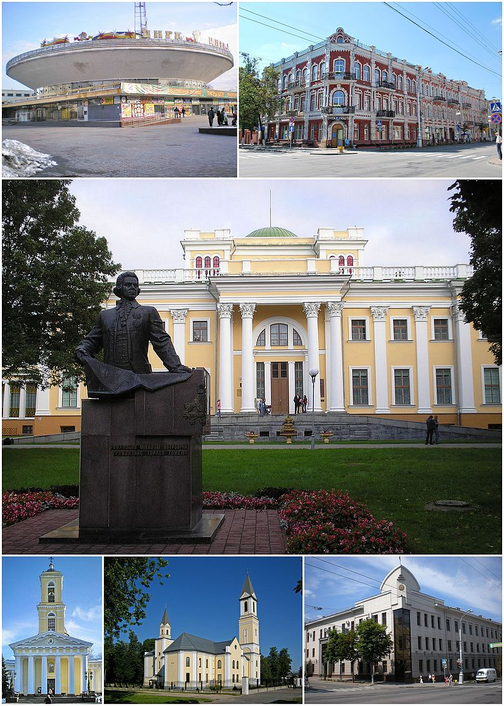
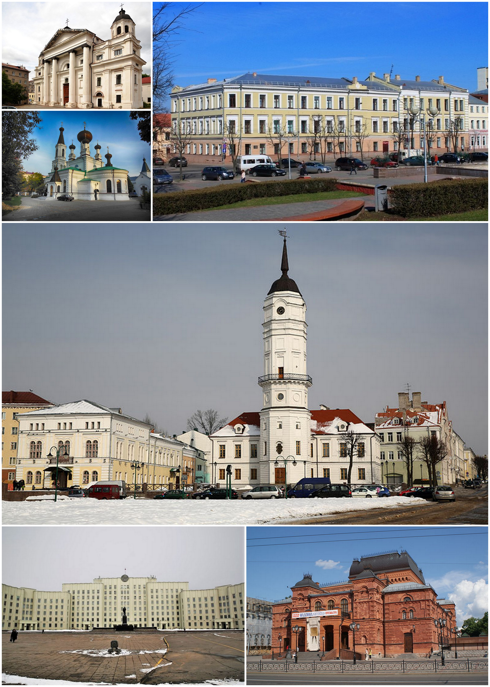

관광지 사진
민스크
2013년 현재 인구는 약 2백만이다. 1984년 민스크 지하철이 개통되었다.
소련 해체 후 벨라루스의 수도로 지정되었다. 독립국가연합의 본부가 있는 도시기도 하다.
러시아어를 쓰면서도 러시아보다 저렴한 물가 때문에 러시아어를 배우기 위해 유학생들이 꽤 많이 가는 도시이다.

흐로드나
흐로드나(벨라루스어: Гро́дна, 러시아어: Гро́дно 그로드노[*], 리투아니아어: Gardinas, 폴란드어: Grodno)는 벨라루스의 도시로
흐로드나 주의 주도이며 인구는 327,540명(2009년 기준)이다. 네만 강과 접하고 있고 폴란드, 리투아니아와 국경을 접한다.

브레스트
브레스트(벨라루스어: Брэст 러시아어: Брест)는 벨라루스의 도시로, 브레스트 주의 주도이다.
소련의 제일 서쪽 끝에 있는 도시 중의 하나였다. 제2차 세계 대전 이전에는 폴란드의 도시였다.
참고영상

고멜
호멜(벨라루스어: Го́мель/Homyel, 러시아어: Го́мель 고멜[*])은 벨라루스의 남동부에 위치하는 도시로 호멜 주의 주도이다.
인구에서는 벨라루스에서 2번째로 많은 도시이다. 면적은 113km²이다.
벨라루스인 76.7%, 러시아인 16.9%, 우크라이나인 5.1%이 거주하고 있다.

모길료프
마힐료우(벨라루스어: Магілёў, 러시아어: Могилёв 모길료프[*])는 벨라루스 동부에 위치한 도시로,
마힐료우 주의 주도이며 드네프르 강과 접한다. 벨라루스에서 세 번째로 큰 도시이다.

비텝스크
비쳅스크(벨라루스어: Ві́цебск, 러시아어: Ви́тебск 비텝스크[*], 폴란드어: Witebsk)는 벨라루스의 도시이다.
러시아 및 라트비아와의 국경에 가깝다. 비쳅스크 주의 주도로 인구는 342,381명(2004년)이다.